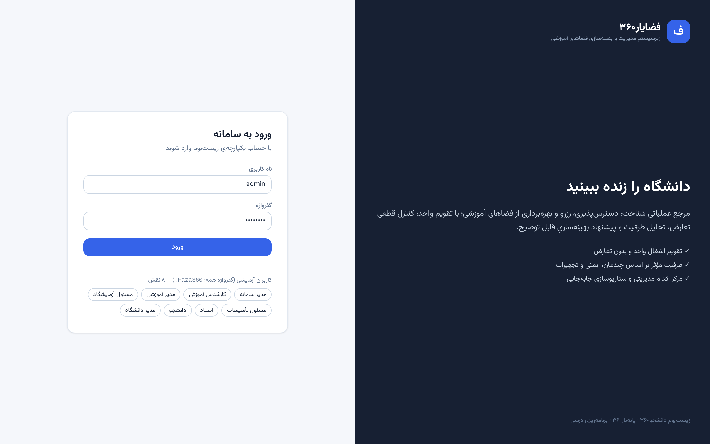
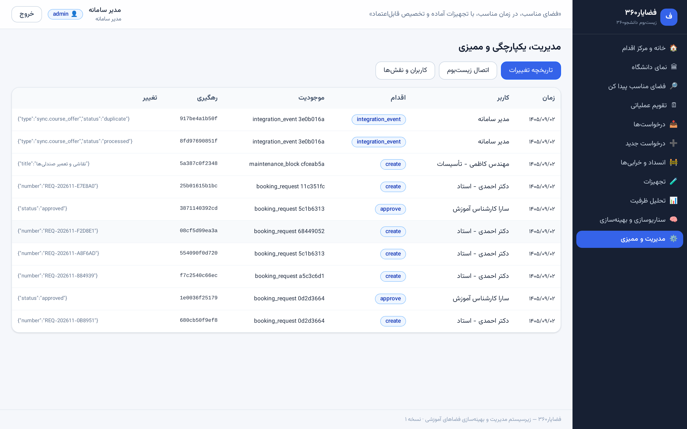

احراز هویت با توکن JWT (الگوریتم HS256) انجام میشود؛ عمر توکن بهصورت پیکربندیپذیر است (پیشفرض ۴۸۰ دقیقه) و کلید امضا از طریق متغیر محیطی داده میشود و نباید مقدار نمونه باقی بماند. پس از احراز هویت، هر درخواست با نقش کاربر سنجیده میشود؛ کنترل دسترسی در لایهٔ سرویس اجرا میشود نه فقط در رابط کاربری، بنابراین تغییر در فرانتاند بهتنهایی هیچ درِ بستهای باز نمیکند. برای درخواستهای نوشتاری، محدودسازی نرخ با پیکربندی پیشفرض ۲۴۰ درخواست در دقیقه فعال است و آپلود فایلها با دو کنترل (نوع مجاز و سقف ۵ مگابایت) و نامگذاری تصادفی روی دیسک انجام میشود تا فایل آپلودی هرگز مسیر اجرا پیدا نکند.

هشت نقش در سامانه تعریف شده است که هر یک، دامنهٔ مشخصی از اختیارها دارد؛ نقشها بر مبنای «کمترین اختیار لازم» طراحی شدهاند و ترکیبهای پرخطا (مثلاً دانشجو و تأیید رزرو) در آزمونهای خودکار صراحتاً رد میشوند. تمام اتفاقهای معنادار سامانه — تأیید، رد، جابهجایی، لغو، انسداد، تغییر شناسنامه و ورود کاربران — در جدول ممیزی ثبت میشود؛ سابقهٔ ممیزی فقطافزایشی است و در صفحهٔ مدیریت، بهصورت خوانا و قابلجستوجو نمایش داده میشود.
| نقش | تواناییهای کلیدی در سامانه |
|---|---|
| مدیر سامانه | پیکربندی، مدیریت کاربران و نقشها، مشاهدهٔ ممیزی کامل |
| کارشناس پشتیبانی | بررسی و تأیید/رد درخواستها، ثبت انسداد، جابهجایی جلسات |
| مدیر آموزش | مدیریت درخواستهای کلاسی، مشاهدهٔ تحلیل واحدهای آموزشی |
| مدیر آزمایشگاه | مدیریت درخواستهای آزمایشگاهی و ظرفیت تجهیزاتی |
| نگهداری و تعمیرات | ثبت و مدیریت انسدادهای تعمیراتی و وضعیت فضاها |
| استاد | ثبت درخواست، جابهجایی جلسات درس خود، ثبت شواهد جلسه |
| دانشجو | مشاهدهٔ برنامه و جستوجوی فضا (بدون اختیار تأیید) |
| رئیس دانشگاه | مشاهدهٔ گزارشهای تحلیلی و شاخصهای کلان |

زمان و تقویم. سامانه با منطقهٔ زمانی Asia/Tehran پیکربندی میشود و تمام بازههای زمانی در پایگاه داده بهصورت UTC با آگاهی منطقهٔ زمانی ذخیره میشوند (نوع timestamptz)؛ نمایش شمسی تنها در لایهٔ رابط کاربری انجام میشود و هفته از شنبه آغاز میگردد. رزروهای تکرارشونده هنگام ساخت، به رخدادهای تاریخدار مستقل شکسته میشوند؛ به همین دلیل تغییر ساعت رسمی کشور یا انتقال یک جلسه، هرگز اثر جانبی روی جلسات دیگر سری ندارد.
همروندی. جایی که دو کاربر میتوانند همزمان تصمیم بگیرند (تأیید رزرو، قرضدادن تجهیز)، سامانه با دو ابزار محافظت میکند: قفل تراکنشی روی ردیفهای مرجع (مثل ردیف فضا) و قید یکتایی زمانی در دیتابیس. نتیجه، رفتار قطعی و قابلتست است؛ نه «معمولاً درست کار میکند». درخواستهای نوشتاریِ تکرارشده نیز با سرصفحهٔ Idempotency-Key شناسایی و خنثی میشوند تا بازتلاش شبکه، رزرو دوباره نسازد.
قرارداد API و خطاها. همهٔ نقاط اتصال زیر پیشوند نسخهدار /api/v1 هستند و فهرستها با پارامترهای page و size صفحهبندی میشوند. خطاها ساختاریافته برمیگردند: کد ماشینخوان (مثل SLOT_TAKEN یا OUTSIDE_ALLOWED_HOURS)، پیام فارسیِ کاربرپسند و جزئیات کمکی؛ به این شکل رابط کاربری میتواند بر اساس کد تصمیم بگیرد، نه بر اساس متن خطا. سلامت سامانه نیز با نقطهٔ /api/v1/health شامل وضعیت خود سرویس و دسترسی به دیتابیس گزارش میشود.
اتصال نسخهدار به پایهیار۳۶۰. دادهٔ پایه از طریق «رونوشت مرجع» میآید: هر رکورد با شناسهٔ بیرونی و شمارهٔ نسخه ذخیره میشود و بهروزرسانی فقط در صورت نسخهٔ جدیدتر پذیرفته میشود. رویدادهای خروجی ابتدا در جدول outbox ثبت و سپس منتشر میشوند (الگوی Transactional Outbox)؛ بنابراین «ثبت در دیتابیس» و «اطلاعرسانی به زیرسیستمها» یا هر دو رخ میدهند یا هیچکدام. در حالت دمو، همگامسازی آزمایشی پایهیار مجاز است؛ در استقرار واقعی این کلید با نشانی سامانهٔ پایه تنظیم میشود.
پشتیبانگیری و بازیابی. پشتیبانگیری با ابزار استاندارد pg_dump انجام میشود و در آزمونهای نسخهٔ ۱.۰.۰، چرخهٔ کامل پشتیبانگیری ← پاکسازی ← بازیابی ← سالمبودن داده عملاً اجرا شده است. آپلودهای کاربران در پوشهٔ مجزا نگه داشته میشوند و باید در سیاست پشتیبانگیری لحاظ شوند؛ در استقرار Docker این پوشه روی volume ماندگار است.
سامانه در سه حالت قابل اجراست و هر سه با یک پورت مشترک (۸۰۹۵) کار میکنند. حالت نخست، Docker Compose است که PostgreSQL اختصاصی و سرویس API را با هم بالا میآورد و برای استقرار دائمی توصیه میشود. حالت دوم، بستهٔ پرتیبل لینوکس است که مفسر مستقل Python و PostgreSQL توکار (pgserver) را در خود دارد و روی هر سیستم لینوکس x86_64 بدون نصب پایتون، پایچارم، PostgreSQL یا Docker اجرا میشود — مناسب دمو، آموزش و استقرار در شبکههای محدود. حالت سوم، اجرا از سورس برای توسعه است. در همهٔ حالتها فرانتاند ساختهشده (dist) توسط خود API سرو میشود و health-check داخلی برای نظارت عملیاتی وجود دارد.
| متغیر محیطی | پیشفرض | توضیح |
|---|---|---|
| FAZAYAR_DATABASE_URL | — (در Docker تنظیم میشود) | نشانی SQLAlchemy پایگاه داده؛ در پرتیبل خودکار ساخته میشود |
| FAZAYAR_JWT_SECRET | مقدار نمونهٔ دمو | کلید امضای توکن؛ در استقرار واقعی الزاماً تغییر داده شود |
| FAZAYAR_PORT | 8095 | پورت سرویس (در پرتیبل و Docker) |
| FAZAYAR_SEED_ON_START | true | ساخت دادهٔ نمونه در نخستین اجرا؛ در محیط واقعی false شود |
| FAZAYAR_TIMEZONE | Asia/Tehran | منطقهٔ زمانی مرجع سامانه |
| FAZAYAR_UPLOAD_DIR | backend/data/uploads | محل ذخیرهٔ آپلودها (روی volume ماندگار) |
| FAZAYAR_MAX_UPLOAD_MB | 5 | سقف حجم هر فایل آپلودی |
| FAZAYAR_RATE_LIMIT | 240 | حداکثر درخواست نوشتاری در دقیقه برای هر کاربر |
| FAZAYAR_ACCESS_TOKEN_MINUTES | 480 | عمر توکن احراز هویت |
| FAZAYAR_DIST_DIR | frontend/dist | محل فایلهای ساختهشدهٔ رابط کاربری |
| FAZAYAR_PAYEHTAR_BASE_URL | — | نشانی پایهیار۳۶۰ برای همگامسازی نسخهدار |
کیفیت و آزمون. نسخهٔ ۱.۰.۰ با ۳۸ سناریوی آزمون API تأیید شده است که گردش کار کامل رزرو، تعارض همزمان، جابهجایی جلسه، تجهیزات، انسداد تعمیراتی، دسترسی نقشها، خطای ساختاریافته، ممیزی و چرخهٔ پشتیبانگیری را پوشش میدهند. آزمونها خودکار و بهصورت اسکریپتِ قابل اجرا در مخزن نگه داشته میشوند (scripts/api_smoke.py) و روی هر دو بستهٔ Docker و پرتیبل اجرا شدهاند. افزونهٔ btree_gist در بستهٔ پرتیبل نیز همراهسازی شده است و در محیطهای بدون این افزونه، سامانه با هشدار اجرا میشود و دفاع تعارض به لایهٔ قفل تراکنشی سپرده میشود — طراحی «کاهش با محترمبودن» بهجای توقف سرویس.
صداقت فنی، بخشی از طراحی است؛ این بخش مرزهای مشخص نسخهٔ ۱.۰.۰ را ثبت میکند تا انتظارها با واقعیت همخوان باشد. موتور بهینهسازی فعلی قاعدهمحور (رتبهبندی قیدمحور) است و برای مسائل متوسط کفایت میکند، اما برای جستوجوی ترکیبیاتی وسیع باید با موتور حل قیود مانند OR-Tools CP-SAT جایگزین شود؛ نقطهٔ این تعویض، سرویس optimizer است و رابط دادهٔ آن پیش از این پایدار شده است. احراز هویت فعلی JWT محلی است و نقطهٔ جایگزینی با سرویس هویت مرکزی زیستبوم (OIDC) در ماژول امنیتی پیشبینی شده است؛ تا آن زمان، مدیریت کاربران از صفحهٔ مدیریت انجام میشود.
بستهٔ پرتیبل برای لینوکس x86_64 با glibc مدرن ساخته شده و PostgreSQL توکار آن برای «استفادهٔ عملیاتی تیمها و دمو» تنظیم شده است؛ برای استقرار سازمانی چندکاربره، نسخهٔ Docker با PostgreSQL اختصاصی، پشتیبانگیری منظم و پایش توصیه میشود. تقویم سامانه شمسی است و ورودیهای میلادی فقط در سطح API پذیرفته میشود؛ اتصال به سامانههای حضور و غیاب یا برنامهٔ درسی دانشگاه هنوز از طریق همان اتصال نسخهدار پایهیار۳۶۰ تعریف خواهد شد.